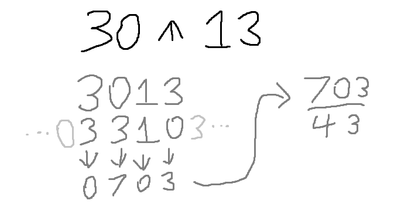

⩚
Bare Fraction:
Simplest Form:
Decimal Form:
Blormfission is a math operator important in the field of grambulatorics. The operation is simple:
Concatenate x and y, and then each digit in the sequence is subtracted by the corresponding digit in the reverse of the sequence shifted right 1. A lesser digit in the minuend is treated as though it has 10 added to it.
The digits are joined back together and then the resulting number is divided by x + y.
For an example, see the image below:
Credit goes to M_rld on Discord for creating this awesome mathematical operation.